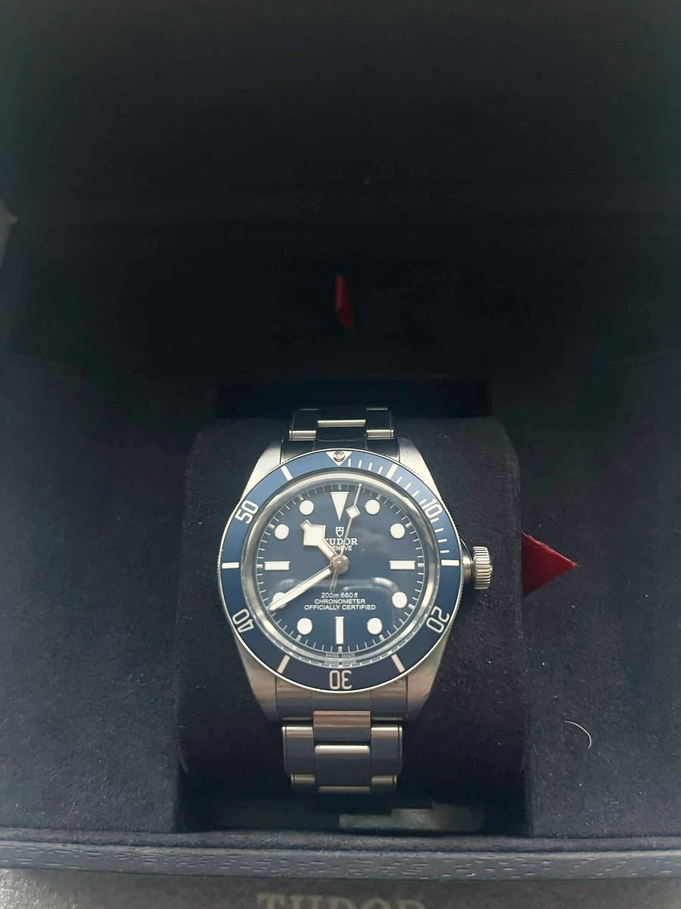
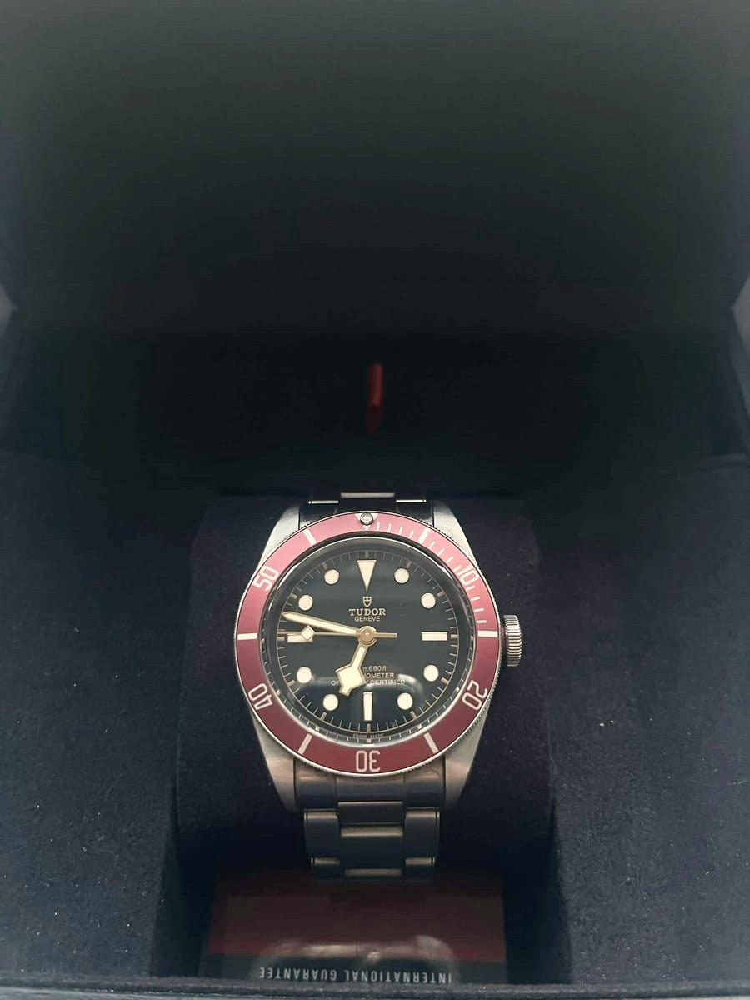

Hold musen over fotoet for at se nærmere
Find et lignende
Leder du efter et lignende?
Fortæl os hvad der betyder noget for dig — reference, årstal eller skive — så giver vi besked når vi finder et.
Mere fra All in Time
Du synes måske også om

TudorSolgt
Black Bay GMT
Tudor's travel watch: a red and blue bezel, a fourth hand for a second time zone and a riveted-style steel bracelet.

TudorSolgt
Black Bay
Black dial and bezel, gilt markers and snowflake hands. The look of Tudor's 1950s divers, made today.

TudorSolgt
Black Bay, blue
Navy bezel and dial with silver markers and snowflake hands. The quietest colour in the Black Bay range.

TudorSolgt
Black Bay, burgundy
The burgundy bezel and gilt details that made the Black Bay famous, over a domed black dial.